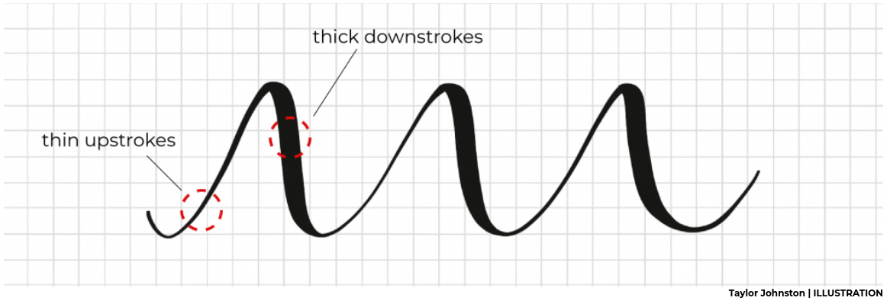

One of the characteristic effects used in hand lettering and calligraphy is to vary the line width by being light on upstrokes and using more pressure on downstrokes.

Here I'm using the R package ggplot2 (and a bit of data wrangling with dplyr), to create that effect in data visualisation:
library(ggplot2) library(dplyr)
The ggplot command allows to map variables to different geometric properties, such as x and y coordinates, but also things like colour, and, yes, line thickness.
We first have to create a data frame with the x and y coordinates defining points along our curve. We also add a third variable that is used to modulate line width along the curve. To encode "thin on the upstroke" we set this variable constant whenever the y-coordinate increases. For a smooth transition from a light upstroke to a heavy downstroke, we make linewidth proportional to the y-change whenever the y-value decreases.
df = tibble(x = seq(-3*pi, 3*pi, .01), y = sin(2*x) * exp(-.1 * x^2), lwd = c(NA, -pmin(diff(y), 0))) %>% na.omit
ggplot(df) + geom_path(aes(x=x, y=y, size=lwd), show.legend=FALSE) + theme_void()
df = tibble(t = seq(-4.5*pi, 3.7*pi, .01), x = .3 * cos(t) + .1 * t, y = sin(t), lwd = c(NA, -pmin(diff(y),-0.003))) %>% na.omit ggplot(df) + geom_path(aes(x=x, y=y, size=lwd), show.legend=FALSE, lineend='round') + theme_void()
llllovely!
I've set the threshold when the linewidth goes constant to a small negative value rather than 0, so that the line gets to minimum thickness shortly before the minimum or maximum is reached.
I've also specified linened='round' in geom_path to avoid little cracks between between line segments and make transition between them smoother.
df = tibble(t = seq(-2*pi, 2*pi, .01), x = cos(3 * t), y = sin(2 * t), lwd = c(NA, -pmin(diff(y), -0.005))) %>% na.omit ggplot(df) + geom_path(aes(x=x, y=y, size=lwd), show.legend=FALSE, lineend='round') + theme_void()
RR = 7 rr = 3 dd = 6 df = tibble(t = seq(0, 10*pi, .01), x = (RR - rr) * cos(t) + dd * cos((RR-rr)/rr * t), y = (RR - rr) * sin(t) - dd * sin((RR-rr)/rr * t), lwd = c(NA, -pmin(diff(y),-0.01))) %>% na.omit ggplot(df) + geom_path(aes(x=x, y=y, size=lwd), show.legend=FALSE) + theme_void() + scale_size_continuous(range=c(.4,2.5))
There are many ways to create random 2d curves. Here I start by simulating two random walks (one for the x coordinate and one for the y coordinate) with cumsum(rnorm(n)). Then I smooth the random walks with smooth.spline. Not all random curves look good, and I had to play with the random seed and degrees of freedom parameters a bit to get a curve that I liked.
n = 1000 set.seed(187) df = tibble( x = smooth.spline(cumsum(rnorm(n)), df=15)[[2]], y = smooth.spline(cumsum(rnorm(n)), df=15)[[2]], lwd = c(NA, -pmin(diff(y),0))) %>% na.omit ggplot(df) + geom_path(aes(x=x, y=y, size=lwd), show.legend=FALSE, lineend='round') + theme_void() + scale_size_continuous(range=c(.5,3))